ERP para empresas que compran, producen, venden y facturan en México
De la requisición a la factura timbrada, en un solo sistema
Alkes ERP junta ventas, compras, almacén, producción, finanzas y más. Cada documento hereda del anterior y la factura CFDI 4.0 se timbra desde la misma venta. Desde $250 MXN por usuario al mes.
- CFDI 4.0 con timbrado
- Multi-sucursal
- Trazabilidad por lote
Un solo hilo de principio a finCada documento hereda del anterior, sin recapturar.
Qué es Alkes ERP, para quién es y qué resuelve
Qué es
Un ERP con el ciclo completo
Once áreas conectadas: ventas, compras, almacén, producción, contratos, finanzas, atención al cliente, proyectos, recursos humanos, reportes y parámetros. Los documentos se encadenan entre sí.
Alkes ERP concentra la operación de la empresa en un solo lugar: lo que se cotiza, se compra, se almacena, se produce, se vende, se factura, se cobra y se paga, con 153 reportes y trazabilidad entre etapas.
Para quién
Empresas que compran, producen y facturan
Operaciones con inventario propio, procesos de producción por receta, punto de venta y obligación de facturar electrónicamente en México.
Qué resuelve
Los sistemas que no se hablan
Evita recapturar la misma información en compras, almacén y facturación, y perder la trazabilidad entre etapas.
Capacidades
Cada área del negocio, conectada con las demás
Ventas, compras, almacén, producción, finanzas, atención al cliente y personal comparten la misma información, sin capturas duplicadas.
Ventas y facturación
De la cotización a la factura timbrada
La cotización pasa a remisión y a factura CFDI 4.0, con su cuenta por cobrar. El timbrado ante el SAT ocurre a través de PAC desde la misma pantalla y cada operación queda en la bitácora.
- Facturas, complementos de pago y notas de crédito
Emisión y timbrado desde la venta registrada, con el registro de los pagos recibidos y las devoluciones sobre la factura original.
- Punto de venta para el mostrador
Cajas, cortes de caja, tickets y facturas globales, con atajos de teclado: F2 cobrar, F3 buscar producto y F4 cliente.
- Cotizaciones, remisiones y contratos de venta
Cotizaciones con seguimiento de su conversión, remisiones por facturar y contratos de venta con su avance.

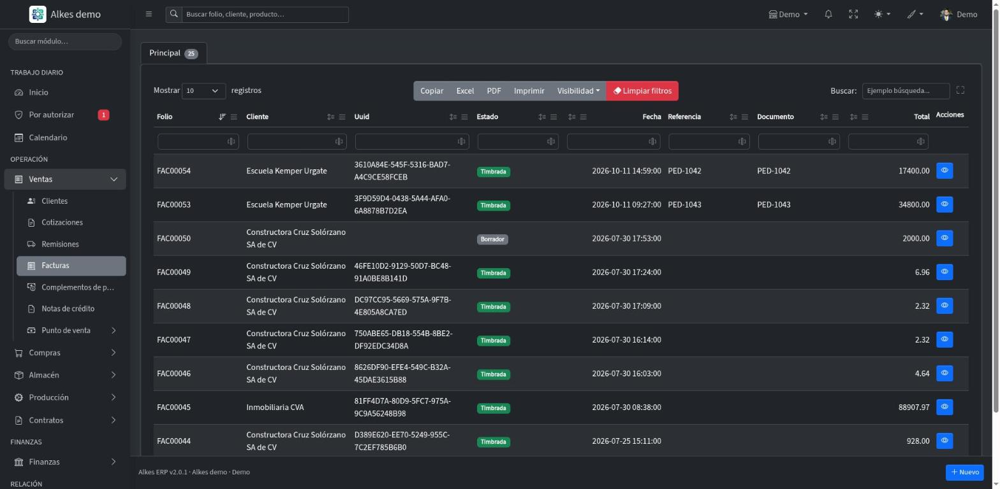
Ventas: documentos encadenados hasta la factura
Compras
De la requisición a la recepción
Una requisición abre la necesidad, se cotiza con proveedores y la orden de compra genera la recepción: el material entra al almacén y la cuenta por pagar queda ligada al documento.
- Requisiciones y cotizaciones
Se solicitan cotizaciones a varios proveedores, se reciben y se adjudica la mejor, partida por partida.
- Órdenes de compra y recepciones
La orden genera la recepción; las recepciones parciales y los rechazos quedan registrados.
- Backorder y contratos de compra
Lo que falta por recibir queda controlado como backorder, y los contratos de compra llevan su avance.
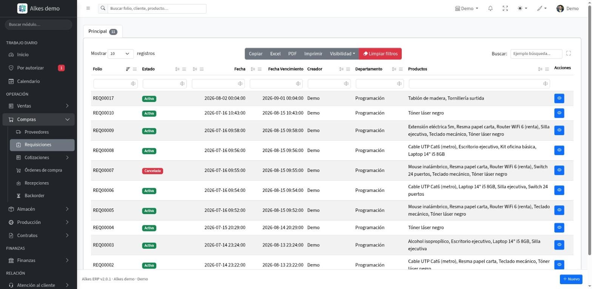
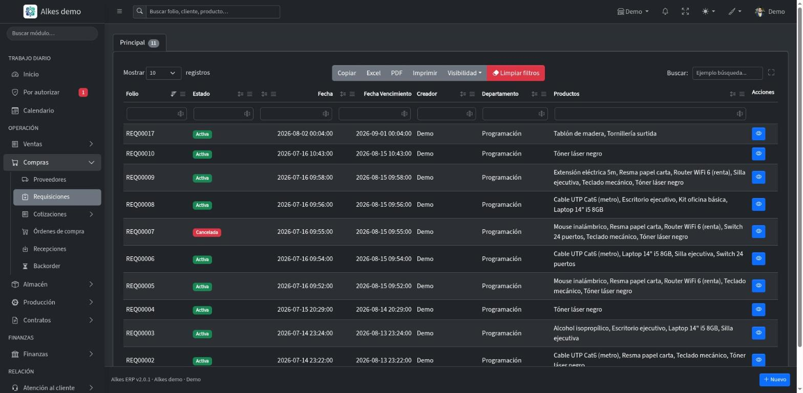
Compras: documentos encadenados y su estado
Almacén e inventario
Inventario que se puede rastrear
Cada entrada, salida y traspaso queda registrada. Las existencias se consultan por almacén y por ubicación, con su valuación y lo que está bajo mínimo.
- Productos, almacenes e inventario
Existencias por almacén, productos bajo mínimo, productos sin movimiento y valuación de inventario.
- Lotes y números de serie
El movimiento conserva el lote y la serie de cada partida, y un reporte sigue un lote de punta a punta.
- Movimientos y traspasos
Entradas, salidas y traspasos entre almacenes, con su kardex por producto.
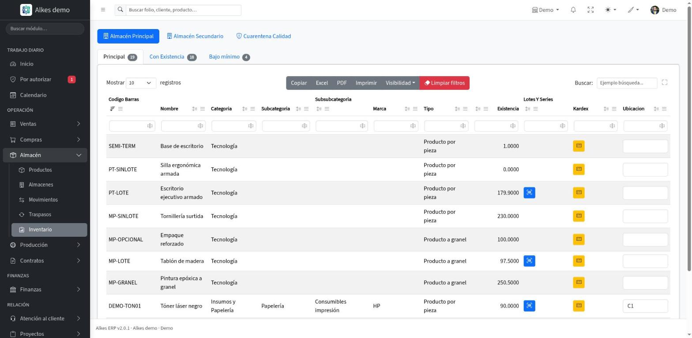
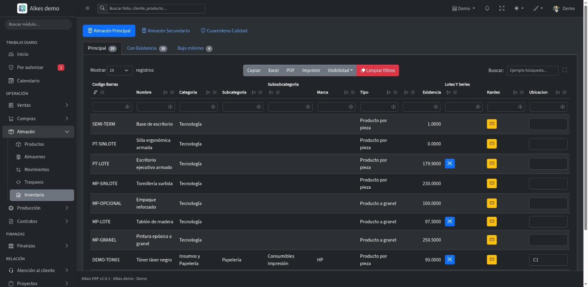
Inventario por almacén
Producción
Producción por receta, con costos
La receta define los materiales; la orden de producción surte, termina y calcula sus costos. El inventario se mueve solo con cada surtido y cada terminación.
- Recetas y órdenes de producción
Órdenes con su avance, su fecha requerida y los materiales pendientes de surtir.
- Surtidos, terminaciones y backorder
Cada surtido y cada terminación mueven el inventario; lo que falta queda como backorder.
- Calidad
Criterios e inspecciones de calidad, con rechazos y scrap por orden.
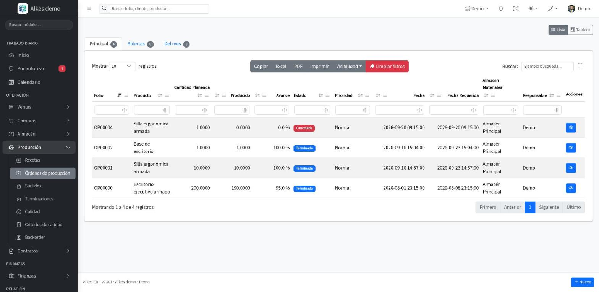
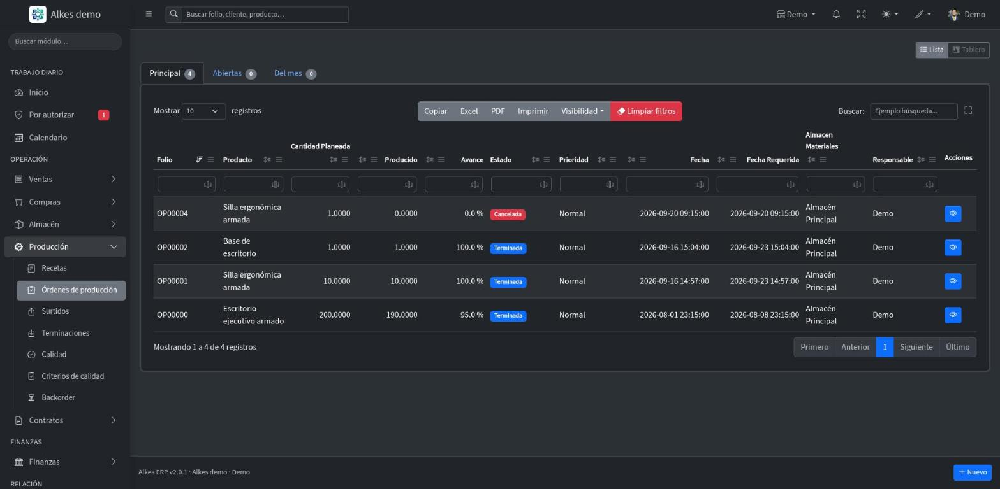
Órdenes de producción por estado
Finanzas, contabilidad e impuestos
Cobranza, tesorería y contabilidad en el mismo sistema
Lo que se vende y se compra alimenta las cuentas por cobrar y por pagar, y de ahí la tesorería, las pólizas contables y las declaraciones.
- Cuentas por cobrar y por pagar
El estado de cada cliente y proveedor ligado a sus documentos, con antigüedad de saldos, días de cartera y calendario de pagos.
- Tesorería
Cuentas bancarias, caja chica, créditos, conciliaciones y flujo de efectivo.
- Contabilidad e impuestos
Catálogo de cuentas, pólizas, cierre contable, libro diario y mayor, balanza, balance general, estado de resultados, declaraciones, retenciones y DIOT.
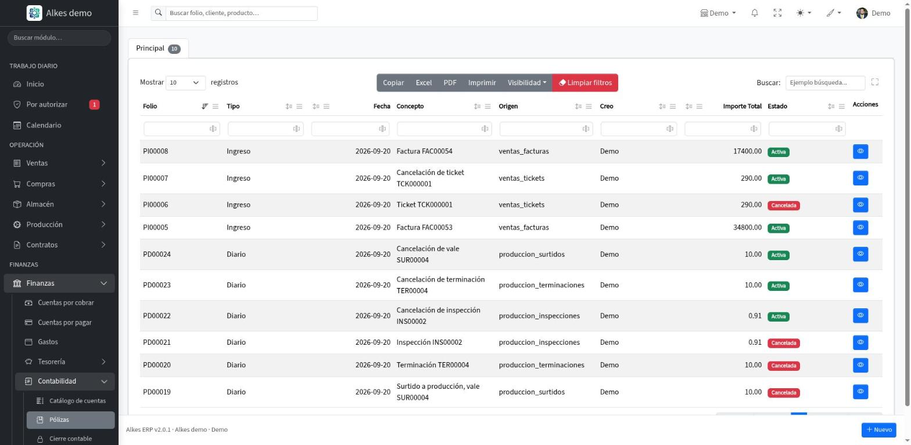
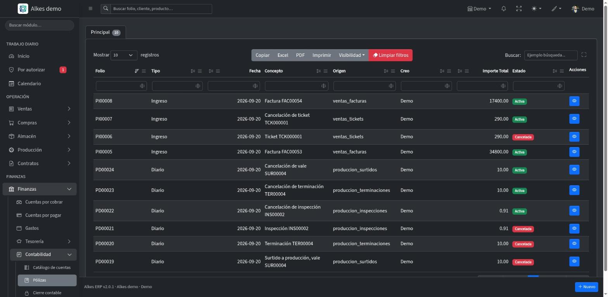
Contabilidad: pólizas y su cuadre
Clientes, proyectos y personas
Lo que pasa antes y después de la venta
Las oportunidades, los tickets de atención, los proyectos y el personal viven en el mismo sistema que las ventas y las compras.
- Atención al cliente
Oportunidades en tablero por etapa, tickets con cumplimiento de SLA y un programa de fidelización con recompensas y encuestas.
- Proyectos
Seguimiento de cada proyecto con sus documentos, su avance y su rentabilidad.
- Recursos humanos
Empleados, comisiones, capacitación y beneficios, con reportes de costo de nómina, altas y bajas.
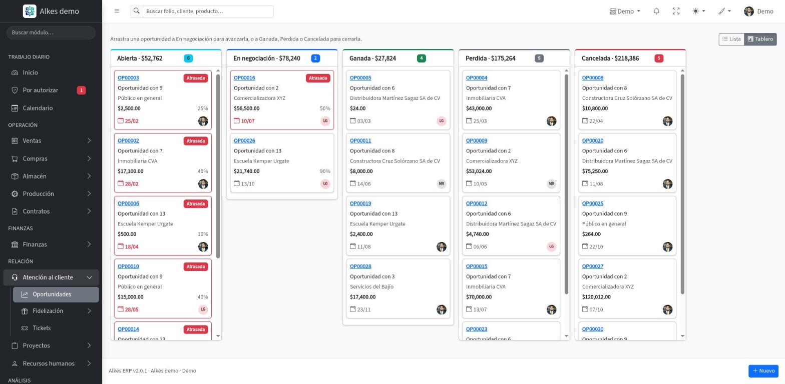
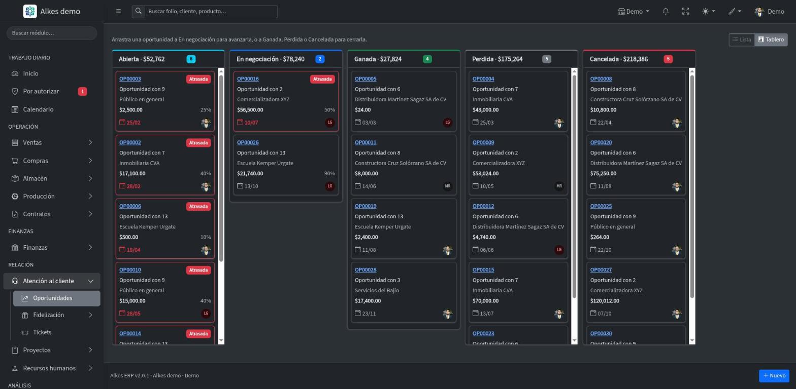
Oportunidades por etapa, con el importe de cada columna
Control y trazabilidad
Cada documento cuenta su historia
Los botones aparecen según el estado del documento, con la siguiente acción a la mano. Se ve de qué documento viene, cuáles generó y quién hizo qué.
- Historial y seguimiento
Línea de tiempo de cada documento y un seguimiento como conversación, con bitácoras de timbrado y de correos.
- Permisos y autorizaciones
Matriz de permisos por usuario y una bandeja Por autorizar con todo lo que espera tu visto bueno, de cualquier área.
- Multi-sucursal
Configuración de la empresa y sus sucursales, cada una con sus usuarios y permisos.
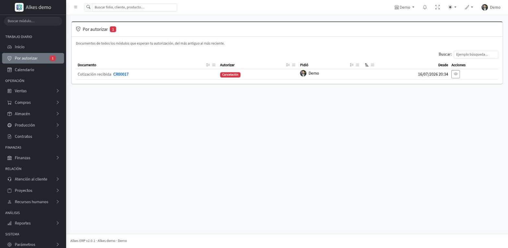
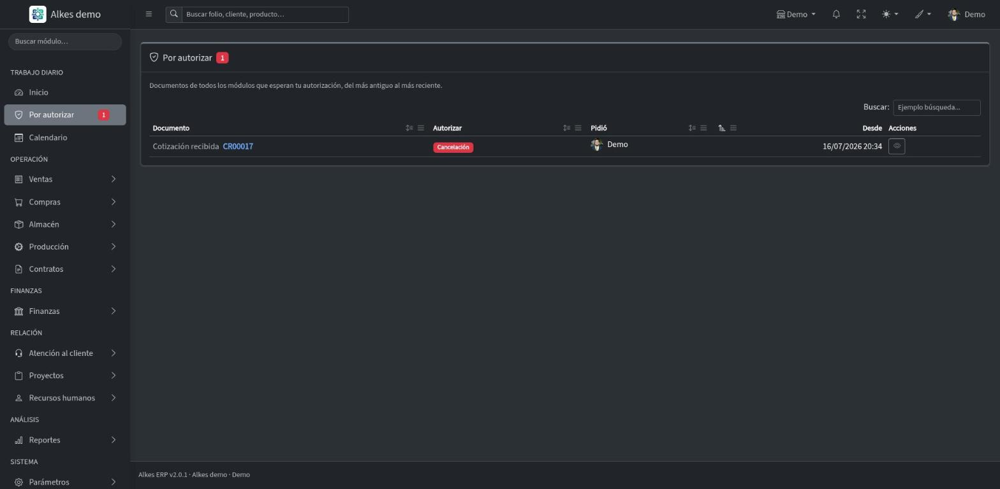
Por autorizar: todo lo pendiente en una sola bandeja
Y todo lo que sostiene la operación
Documentos encadenados
Cada documento hereda las partidas del anterior, sin recapturar información.
Búsqueda en todo el sistema
Un folio, un cliente o un producto desde la barra de arriba; solo aparece lo que tú puedes abrir.
Calendario de la operación
Vencimientos por cobrar y por pagar, entregas de compras, declaraciones, fin de contratos y cierres de oportunidades.
Avisos que tú eliges
Cuando un documento espera tu autorización, cuando se timbra o se cancela ante el SAT; un interruptor por tipo de aviso.
Impresión limpia
Cada documento se imprime con el encabezado de tu empresa, sin menús ni botones.
Manual dentro del sistema
La ayuda se abre en la pregunta de la pantalla donde estás, con buscador.
Ver más del sistema
Más del sistema
Tableros de oportunidades y de producción
Las oportunidades por etapa y las órdenes de producción por estado; arrastrar una tarjeta abre la acción del documento, con su confirmación.
Listados con filtro por columna
Cada columna trae su botón para ordenar y su propio filtro; las acciones se quedan fijas a la derecha.
Ventas en moneda extranjera
Un reporte de ventas en moneda extranjera junto a los de ventas netas, margen y comparativos.
Encuestas con tu logo
La encuesta que reciben tus clientes lleva tu logo, se ve bien en el celular y se responde con botones grandes.
Apariencia a tu gusto
Tema claro, oscuro o automático, 20 colores de énfasis y un modo compacto para ver más filas.
Mi perfil y sellos digitales
Tus datos, tu contraseña, tus avisos y tu actividad; los sellos digitales se suben arrastrando el archivo.
Reportes
153 reportes en 14 categorías
De las ventas del día al balance general: indicadores del periodo, gráficas, periodos listos con un clic y una impresión limpia con el encabezado de tu empresa.
Ventas · 26 reportes
Ventas por cliente, margen de utilidad, pipeline de ventas, ranking ABC de clientes y estatus de CFDI.
Punto de venta · 10 reportes
Cortes de caja, diferencias de caja, tickets por facturar y ventas por cajero.
Compras · 17 reportes
Ciclo de compra, comparativo de cotizaciones, variación de precio y cumplimiento de entrega.
Almacén · 16 reportes
Kardex por producto, valuación de inventario, lotes por vencer y trazabilidad de lote.
Producción · 12 reportes
Costos por orden, avance de órdenes, variación de materiales y rechazos y scrap.
Contratos · 5 reportes
Contratos de venta y de compra, avance de contratos y contratos por vencer.
Ver las 14 categorías
Cartera · 10 reportes
Antigüedad de saldos, días de cartera (DSO), cobranza del periodo y estado de cuenta por socio.
Tesorería · 8 reportes
Flujo de efectivo, conciliaciones bancarias, calendario de pagos y saldos bancarios.
Contabilidad · 12 reportes
Balance general, estado de resultados, balanza de comprobación, libro diario y libro mayor.
Impuestos · 5 reportes
DIOT, IVA por cobrar y por pagar, retenciones efectuadas y calendario de declaraciones.
Atención al cliente · 12 reportes
Embudo de ventas, tasa de conversión, tiempos de resolución y cumplimiento de SLA.
Proyectos · 4 reportes
Avance, documentos y rentabilidad de proyectos.
Recursos humanos · 9 reportes
Costo de nómina, altas y bajas, comisiones del periodo y plantilla de personal.
Sistema · 7 reportes
Bitácora de timbrado, control de folios, historial de documentos y matriz de permisos.
Por qué Alkes ERP
El sistema completo, sin módulos de pago
No hay ediciones ni módulos extra por contratar: todas las áreas están incluidas y el precio depende solo de cuántos usuarios tienes.
Un solo hilo
Lo que hoy vive repartido, en un mismo expediente
El ciclo que hoy se reparte entre correos, hojas de cálculo y el sistema de facturación, dentro de un mismo expediente.
- Sin recapturar
Cada documento hereda las partidas del anterior.
- Factura desde la venta
La facturación no es un servicio aparte que haya que alimentar a mano: nace del documento de venta.
- Trazabilidad por lote y serie
El movimiento de inventario conserva el lote y la serie de cada partida.
- Cuentas por cobrar y pagar ligadas
El estado financiero de cada cliente y proveedor, ligado a sus documentos.
- Permisos por persona
Cada quien ve y opera únicamente lo que su rol le permite.
- Reportes de todas las áreas
153 reportes, con periodos listos y comparativos.
Integración con tu operación
Alkes ERP se adapta a cómo trabaja tu empresa, no al revés.
De la requisición a la factura
Se pide, se cotiza, se recibe, se produce y se factura dentro del mismo sistema, y cada paso hereda del anterior.
Varias sucursales
Configuras la empresa y sus sucursales, cada una con sus usuarios, sus permisos y sus folios.
Facturación CFDI 4.0
Facturas, complementos de pago y notas de crédito, con timbrado ante el SAT a través de PAC y una bitácora de cada operación.
Autorizaciones en un solo lugar
Todo documento que espera tu autorización, de cualquier área, con quién lo pidió, desde cuándo y por cuánto.
La diferencia Alkes ERP
No ofrecemos solo un software, ofrecemos una solución completa para operar tu empresa. Con soporte directo del equipo que lo desarrolla, tu inversión evoluciona contigo.
Precios
Un precio por usuario, sin módulos de pago
Pagas por cada usuario con cuenta activa, y el precio baja con cada usuario que sumas. Incluye todas las áreas del sistema, el soporte, las actualizaciones y la implantación.
Precio por usuario
Desde$250MXN por usuario al mes
Más usuarios, menos pagas por cada uno
- Cada usuario adicional baja 1% el precio de todos tus usuarios.
- Arriba de 50 usuarios, obtienes el descuento máximo de 50%.
- Incluye todas las áreas del sistema, el soporte, las actualizaciones y la implantación. Sin módulos de pago.
- Al sumar un usuario se cobra al momento la parte proporcional del periodo. Al reducir tus usuarios contratados, el cobro menor rige desde tu siguiente renovación.
- Con el plan anual solo pagas 10 meses, y los otros 2 son gratis.
- Todas las áreas incluidas
- Soporte y actualizaciones incluidos
- Implantación incluida
- Facturación CFDI 4.0
- Roles y permisos por usuario
- Multi-sucursal
- Precios en pesos mexicanos
Preguntas frecuentes
Lo que más nos preguntan sobre Alkes ERP
¿Tienes otra duda? Escríbenos a soporte@alkes.mx.
¿Qué es Alkes ERP?
Un sistema de gestión empresarial de Alkes que conecta ventas, compras, almacén, producción, finanzas y contabilidad, atención al cliente, proyectos y recursos humanos, con facturación electrónica CFDI 4.0 integrada.
¿Cuánto cuesta?
Desde $250 MXN por usuario al mes. Se cobra por usuario con cuenta activa, y cada usuario adicional baja 1% el precio de todos hasta llegar a 50% de descuento arriba de 50 usuarios. Con el plan anual solo pagas 10 meses, y los otros 2 son gratis. Incluye todas las áreas del sistema.
¿Cómo se calcula mi mensualidad?
Todos tus usuarios pagan el mismo precio, que baja con cada usuario que sumas. Con 15 usuarios son 15 × $430 = $6,450 MXN al mes; con 50 usuarios son 50 × $255 = $12,750 MXN al mes. La calculadora de la sección de precios te da el total exacto.
¿Qué pasa si agrego o quito usuarios a mitad del periodo?
Al sumar un usuario se cobra al momento la parte proporcional hasta tu próxima factura, y desde la siguiente el precio por usuario se ajusta a tu nuevo total. Desactivar un usuario libera su lugar para otra persona, pero no cambia el cobro: para pagar menos, reduce tus usuarios contratados en Configuración y la reducción rige desde la siguiente renovación; no hay reembolso a mitad del periodo.
¿Qué incluye el precio?
Todas las áreas del sistema, el soporte, las actualizaciones y la implantación. El precio depende solo del número de usuarios con cuenta activa.
¿Hay módulos o ediciones de pago aparte?
No. Todas las áreas del sistema están incluidas y el precio depende solo del número de usuarios; tú decides qué usuario tiene qué permisos.
¿Emite facturas CFDI 4.0?
Sí. La factura nace de la venta registrada en el sistema y se timbra ante el SAT a través de PAC desde la misma pantalla. Cada operación de timbrado queda en una bitácora. También maneja complementos de pago y notas de crédito.
¿Qué áreas incluye?
Ventas (con punto de venta), compras, almacén, producción, contratos, finanzas (cuentas por cobrar y por pagar, gastos, tesorería, contabilidad e impuestos), atención al cliente, proyectos, recursos humanos, reportes y parámetros.
¿Controla lotes y números de serie?
Sí. El movimiento de inventario conserva el lote y el número de serie de cada partida, y hay un reporte de trazabilidad de lote.
¿Sirve para varias sucursales?
Sí. Se configuran la empresa y sus sucursales, cada una con sus usuarios y permisos.
¿Cuántos reportes trae?
153 reportes en 14 categorías, de ventas, compras, almacén, producción, cartera, tesorería, contabilidad e impuestos (incluida la DIOT), entre otras.
¿Hay que instalar algo?
No. Se usa desde el navegador, en la computadora o en el celular.
¿Puedo probarlo?
Sí, con el demo y sus credenciales de prueba.
Confianza
Un equipo con nombre, correo y teléfono
Alkes ERP es un producto de Alkes. Nuestro equipo desarrolla, opera y da soporte al mismo sistema.
Sin instalar nada
Se usa desde el navegador, en la computadora o en el celular.
Bitácoras de todo
Timbrado, correos y el historial de cada documento, con autor y fecha.
Permisos por rol
Cada persona ve y opera únicamente lo que su rol le permite.
Documentos encadenados
Cada documento hereda del anterior, sin recapturar información.
Soporte del equipo que construye Alkes ERP
Nuestro equipo desarrolla, opera y da soporte a Alkes ERP de principio a fin. Para soporte técnico, una demostración guiada o un módulo a la medida de tu operación, hablas directamente con el equipo que construye el sistema.
Novedades
El producto se mueve, y queda por escrito
Historial público de versiones: lo que se entregó, cuándo y qué cambia en tu trabajo diario.
v2.9.0 Cada registro muestra solo lo que puedes hacer 26 oct 2026
- Botones según el estado
Un documento timbrado, cancelado o terminado ya no ofrece acciones que no le corresponden, como cambiar el almacén o agregar partidas.
- El expediente se conserva
En un documento cerrado puedes seguir subiendo archivos, pero ya no se borran.
- Cuentas vencidas y en disputa
Las cuentas por cobrar y por pagar se marcan solas como vencidas, y puedes poner una en disputa: conserva su saldo y no recibe abonos hasta resolverla.
- Pagos por confirmar
Registra un cheque o una transferencia por verificar: no baja el saldo hasta que lo confirmas, y si rebota queda anotado.
v2.8.3 Imprime el acuse de cancelación 24 oct 2026
- Botón «Acuse de cancelación»
En facturas, notas de crédito, complementos de pago y facturas globales canceladas aparece junto a Imprimir y abre el acuse del SAT en el visor.
- Formato completo
Emisor, receptor, UUID, total, fechas, motivo de cancelación, estatus ante el SAT y su sello digital.
v2.8.2 Registro completo de cada timbrado 24 oct 2026
- Todo queda guardado
Cada timbrado, cancelación y consulta de estatus guarda el comprobante y la respuesta completa del servicio de timbrado, para aclarar cualquier rechazo sin adivinar.
v2.8.1 Mejora interna del manejo de archivos 24 oct 2026
- Sin cambios en tu forma de trabajar
Se ordenó el código que guarda tus archivos para que sea el mismo en todos los sistemas de Alkes.
v2.8.0 Mi nube: tus archivos en un solo lugar 23 oct 2026
- Mi nube
En el menú de tu nombre, después de «Mi perfil y ajustes»: todos tus archivos con el documento y folio al que pertenecen, para verlos, descargarlos, borrarlos o subir archivos sueltos. Cada quien ve solo lo suyo.
- Tu espacio, siempre a la vista
Cada usuario tiene su propio espacio y una barra junto a los adjuntos te dice cuánto llevas usado.
- Adjuntos en tabla
Los adjuntos de cada documento se ven en una tabla con búsqueda y orden; el borrado queda en el historial del documento.
- Archivos mejor protegidos
Cada archivo se revisa por su contenido real y solo se descarga con permiso.
v2.7.2 Claves de clientes y proveedores sin choques 23 oct 2026
- Una sola serie de claves
Dar de alta un cliente o proveedor desde cualquier sucursal ya no choca con las claves que dio otra.
v2.7.1 Los folios arrancan en 1 20 oct 2026
- Primer folio correcto
El primer documento de una sucursal nueva sale con folio 00001.
- Próximo folio exacto
En Sucursales, «Próximo folio» muestra el folio que realmente se va a emitir.
v2.7.0 Inventario físico 20 oct 2026
- Cuenta un almacén completo o parcial
Prepara, cuenta, revisa y aplica. Varias personas capturan a la vez, con lector de código de barras y conteo ciego.
- Diferencias con su póliza
Las diferencias se valúan, cada una lleva su motivo y al aplicarlas se generan los movimientos y la póliza.
- Bloqueo mientras se cuenta
Opcional: nadie vende, recibe ni traspasa un producto que se está contando.
- Hoja de conteo, diferencias y acta
En PDF, y el acta se puede enviar por correo. Tres reportes nuevos en Almacén.
v2.6.6 Cobrar y timbrar la factura global sin tropiezos 20 oct 2026
- Corregido
En el punto de venta, Cobrar vuelve a abrir su confirmación, y lo mismo «Generar y timbrar» en las facturas globales.
v2.6.5 Cancelaciones de CFDI a prueba de errores 20 oct 2026
- Se revisa antes de llamar al SAT
Si algo impediría revertir inventario, cuentas o pólizas, se avisa antes de cancelar ante el SAT.
- Cancelación en tres pasos
Si el SAT cancela pero el sistema no alcanza a completar, el documento lo dice y el botón «Completar cancelación» lo termina.
- Consultar estatus SAT resuelve más casos
Si el receptor rechaza la cancelación, el documento vuelve a estar vigente y se puede cancelar otra vez.
v2.6.4 Encuentra la clave SAT de tus productos 17 oct 2026
- Buscador de clave SAT
Escribe qué vendes y te muestra las claves que coinciden, o explora por categoría: productos o servicios, segmento, clase y producto. Un clic llena la clave y su descripción.
- Datos fiscales más ordenados
Unidad, moneda, clave y descripción quedan alineadas en dos columnas.
v2.6.3 Formulario de productos más ordenado 17 oct 2026
- Cuatro columnas
El encabezado del producto se reparte en datos básicos, costos y precios, estado y clasificación, y la descripción es más compacta.
v2.6.2 Captura más a prueba de errores 17 oct 2026
- Valores imposibles rechazados
Descuentos, días de crédito, montos, tipos de cambio y otros campos ahora tienen mínimos y máximos razonables.
- Códigos postales con cero
Los códigos que empiezan con cero (como los de la Ciudad de México) ya se guardan completos.
- Teléfono, sitio web y cuenta
Se revisa su formato en clientes y proveedores.
v2.6.1 Dos errores de captura de productos 17 oct 2026
- Servicios sin costo
Un servicio ya se puede guardar sin costo, y un producto que no se vende sin precio.
- Productos con historial
Guardar un producto normal que ya aparece en facturas o cotizaciones dejó de marcar un error de kit.
v2.6.0 Contabilidad por clase de inventario 17 oct 2026
- Cada producto, su cuenta
Mercancías, materias primas, semiterminados, productos terminados y consumibles ahora se registran en la cuenta que les corresponde.
- Pólizas que reparten solas
Recepciones, movimientos de almacén, producción, remisiones, facturas, devoluciones y tickets arman la póliza por clase.
- Consumibles al gasto
En Configuración puedes elegir gastar los consumibles al comprarlos.
v2.5.0 Siete tipos de producto 17 oct 2026
- Cada producto dice qué es
Mercancía para reventa, materia prima, semiterminado, producto terminado, consumibles, activo fijo y servicio.
- Solo donde corresponde
Cada producto aparece únicamente en los documentos donde puede usarse, y el tipo se bloquea cuando ya tiene movimientos.
- Asistente para elegir tipo
Cinco preguntas te sugieren el tipo correcto.
v2.4.4 Dos mejoras de seguridad 17 oct 2026
- Historial solo de tu empresa
El historial de un documento solo se consulta dentro de tu empresa.
- Módulos apagados bien cerrados
Un módulo apagado ya no entrega datos en sus listados.
v2.4.3 Modal de notas de partida más limpio 17 oct 2026
- Sin huecos ni íconos sobrantes
Las ventanas de captura ya no muestran una fila vacía ni dejan una columna en blanco.
v2.4.2 Archivos adjuntos en lista 17 oct 2026
- Vista de lista
Los archivos adjuntos se abren siempre en lista.
v2.4.1 Notas y archivos lado a lado 17 oct 2026
- Mejor aprovechado
Las notas internas y los archivos adjuntos van en la misma fila; en celular, uno sobre otro.
v2.4.0 Notas internas en todos los documentos 17 oct 2026
- Notas que no salen de tu empresa
Varias notas por documento, con autor y fecha. Nunca se imprimen ni se envían por correo.
- Con historial
Cada alta, edición y eliminación queda en el historial del documento.
v2.3.1 Archivos adjuntos en catálogos y ajustes 16 oct 2026
- Más pantallas
Almacenes, usuarios, sucursales, recetas, beneficios, capacitaciones, cajas, encuestas y recompensas también aceptan archivos.
v2.3.0 Archivos adjuntos en todo el ERP 16 oct 2026
- 36 pantallas más
Cotizaciones, remisiones, notas de crédito, complementos de pago, tickets, cortes de caja y más aceptan archivos, con los mismos límites.
v2.2.3 El visor de PDF funciona en el celular 16 oct 2026
- PDF dentro del mismo visor
En Chrome para Android y otros navegadores sin visor propio, el PDF ahora se ve en el modal, página por página, con su botón Descargar.
v2.2.2 PDF adjuntos en el celular 16 oct 2026
- Visor de PDF en el celular
Los PDF adjuntos ya se ven dentro del visor en navegadores sin visor propio.
v2.2.1 Visor de archivos adjuntos 16 oct 2026
- Gestor de archivos
Los adjuntos se ven en cuadrícula o lista, con miniaturas; imágenes en galería y PDF, audio, video y texto en un visor con botón Descargar.
v2.2.0 Archivos adjuntos en documentos 16 oct 2026
- Facturas, cuentas por pagar y órdenes de compra
Arrastra o elige varios archivos a la vez, con barra de avance. Hasta 10 MB por archivo, 20 por documento y 1 GB por persona.
- Seguros
Se rechazan ejecutables, scripts y páginas web.
v2.1.6 «Recuérdame» en hasta 5 equipos 16 oct 2026
- Cada equipo se recuerda por separado
Puedes recordar hasta 5 equipos a la vez; al recordar el sexto se olvida el que lleva más tiempo sin usarse.
- Lista en Mi perfil
En Mi perfil › Seguridad ves tus equipos recordados con navegador, sistema, IP y último uso, y puedes olvidar el que quieras.
- Más seguro
Cerrar sesión olvida solo ese equipo, y cambiar la contraseña o dar de baja a un usuario olvida sus equipos recordados. Cada persona inicia sesión una vez más y vuelve a marcar «Recordarme».
v2.1.5 Recuperar contraseña y acceso desde el celular 16 oct 2026
- Recupera tu contraseña desde el acceso
Escribes tu correo, recibes un código de 6 dígitos que vence a los 15 minutos y con él pones tu contraseña nueva.
- Acceso cómodo en el celular
La pantalla de acceso se ajusta a cualquier tamaño, en vertical y en horizontal, sin hacer scroll ni tapar la tarjeta con el teclado.
v2.1.4 Sin avisos al salir de un formulario 15 oct 2026
- Sales cuando quieres
Ya no aparece la advertencia del navegador al pulsar Regresar, recargar o cerrar la pestaña mientras editas un documento.
v2.1.3 Todas las tablas se ordenan igual 15 oct 2026
- Un solo control de orden
Las partidas con Backorders y los reportes ahora ordenan desde el encabezado con el mismo menú (ascendente, descendente, limpiar) que el resto de las tablas.
v2.1.2 Encabezado de los documentos más limpio 15 oct 2026
- Más espacio en el encabezado
Quitamos de debajo del encabezado de cada documento la línea de estados y los renglones «Viene de» y «Se generó».
- Todo en el botón Información
El panel Información ahora muestra, arriba del historial, de qué documento viene el actual y qué se generó de él, con un enlace a cada uno y su estado.
v2.1.1 Botones iguales y en el mismo orden en todos los módulos 15 oct 2026
- Cada botón, siempre del mismo color
Guardar y Borrador en azul, Procesar en verde, Cancelar y Eliminar en rojo, todas las autorizaciones en amarillo, Imprimir y Regresar en gris. Los mismos colores en todos los módulos.
- Siempre en el mismo orden
De izquierda a derecha, por relevancia: primero guardar, luego las acciones, las cancelaciones y las autorizaciones. Al extremo derecho van Enviar, Información y Regresar.
- Sin menús escondidos
Todos los botones están a la vista, uno por uno, rellenos y con su ícono. Ya no hay botones de solo contorno ni menús «Más».
- Mejor en el celular
En pantallas chicas los botones muestran solo su ícono para que quepan, y la acción principal conserva su texto.
- El botón de correo, más corto
Ahora se llama simplemente Enviar.
v2.1.0 Envía tus documentos por correo, desde el sistema 15 oct 2026
- Un botón para enviar
Facturas, notas de crédito, complementos de pago, cotizaciones, remisiones, órdenes de compra y más llevan el botón «Enviar». Se abre una ventana con el correo de tu cliente o proveedor, el asunto y el mensaje ya escritos, y los archivos marcados: el PDF y, en los fiscales, el XML.
- Correos limpios, que sí llegan
Un diseño sencillo que se ve bien en el celular y en modo oscuro, sin enlaces ni botones. El documento viaja como archivo adjunto y cada envío queda anotado en el historial del documento.
- Varios contactos por cliente y proveedor
Registra a quien recibe las facturas, a quien cobra y a quien compra, y marca qué documentos le corresponden a cada uno. Al enviar, el sistema propone a quien toca.
- Solicitudes de cotización, una por proveedor
Al pedir precio a varios proveedores se manda un correo distinto a cada uno, con su nombre, y ninguno ve a los demás.
- El correo de tu empresa
En Configuración › Correo eliges a dónde contestan tus clientes y la firma y el pie de tus correos. Si prefieres, envías con el servidor de correo de tu empresa y los correos salen desde tu propio dominio.
- Bitácora de correos más completa
El reporte muestra qué se envió, a quién, con qué archivos y por qué medio.
v2.0.3 Formularios más claros, con ícono en cada campo 14 oct 2026
- Un ícono en cada campo
Cada dato que capturas lleva su ícono al lado izquierdo, para reconocer de un vistazo qué se pide.
- Nombre y campo en la misma línea
El nombre del campo queda a la izquierda y el campo a su derecha, en todos los formularios y ventanas.
- Tarjetas con título e ícono
Cada bloque de una pantalla se identifica con su ícono y su título.
- Configuración y datos para facturar con el mismo orden
Las pantallas de Configuración, suscripción y datos para facturar siguen el mismo acomodo que el resto del sistema.
v2.0.2 Cobro por usuario y cupo editable 13 oct 2026
- Tú decides cuántos usuarios contratas
Ya no hay planes ni topes por tipo de usuario. Contratas un número de usuarios y cada persona activa ocupa un lugar, sea cual sea su rol.
- Cambia tu cupo desde Parámetros
El administrador sube o baja el total de varios en varios, con una vista previa del cobro. Al subir, se cobra de inmediato la parte proporcional del periodo.
- Bajar el cupo, sin sorpresas
La reducción queda programada para la renovación y nunca baja de los usuarios activos. Si cambias de opinión, pides de nuevo el total actual y se cancela.
- Aviso si el cupo está lleno
Al dar de alta o reactivar un usuario con el cupo lleno, el sistema avisa en lugar de cobrar por su cuenta. Desactivar un usuario no cambia el cobro.
- Timbres CFDI por usuario
Cada usuario contratado incluye 100 timbres al mes para facturar en producción.
- Contacto en los documentos
La dirección elegida en los documentos de compras y ventas lleva la persona de contacto y sus teléfonos.
- Aviso de cupo excedido en el Inicio
Si tras una renovación hay más usuarios activos que el cupo, el Inicio lo muestra con el plazo para regularizar.
v2.0.1 Un menú en el orden en que trabajas 9 oct 2026
Resumen de la versión
- Lo diario, hasta arriba
Inicio, Por autorizar y Calendario abren el menú en su propia sección, Trabajo diario, como en Mantis, SmartPend y GeoCheck.
- Cada área sigue su flujo
Primero el catálogo, luego los pasos en su orden real y al final los reportes: en Compras, Recepciones ya va antes de Backorder, y en Producción, Calidad sigue a Terminaciones.
- Finanzas empieza por lo de todos los días
Cuentas por cobrar, Cuentas por pagar y Gastos van primero; Tesorería, Contabilidad e Impuestos después.
- Reportes en el mismo orden que el menú
Las categorías de reportes siguen el orden de las áreas, de Ventas a Sistema.
v2.0.0 Interfaz renovada, un inicio que dice qué atender y autorizaciones en un solo lugar 9 oct 2026
Resumen de la versión
- Interfaz renovada de punta a punta
Alkes ERP estrena diseño completo, el mismo de Mantis, SmartPend y GeoCheck. El encabezado, el menú y el pie se quedan fijos mientras trabajas, y se usa igual de cómodo en el celular que en la computadora. Tema claro, oscuro o automático, 20 colores de énfasis y un modo compacto para ver más filas.
- Un inicio que dice qué atender
Ventas del mes, cartera vencida, pagos de los próximos días y lo que espera autorización, cada uno con su acceso directo. Además, facturado contra cobrado de los últimos doce meses, lo más vendido, productos bajo mínimo, órdenes de producción en curso y la actividad reciente.
- Por autorizar, en una sola bandeja
Todo documento que espera tu autorización, de cualquier área, con quién lo pidió, desde cuándo y por cuánto. El menú muestra cuántos hay pendientes.
- Avisos en la campana, los que tú elijas
Te avisa cuando un documento espera tu autorización, cuando autorizan o rechazan uno tuyo y cuando se timbra o se cancela ante el SAT. Un interruptor por tipo de aviso decide cuáles recibes.
- Calendario de la operación
Vencimientos por cobrar y por pagar, entregas de compras, fechas requeridas de producción, declaraciones, fin de contratos y cierres de oportunidades, en vista de mes o de lista. Un clic abre el documento.
- Tableros de oportunidades y de producción
Las oportunidades por etapa, con el importe de cada columna, y las órdenes de producción por estado, con su avance. Arrastrar una tarjeta abre la misma acción del documento, con su confirmación.
- Cada documento cuenta su historia
Los botones aparecen según el estado del documento, con la siguiente acción a la mano. Se ve de qué documento viene y cuáles generó, su historial en línea de tiempo y el seguimiento como conversación.
- Búsqueda en todo el sistema
Escribe un folio, un cliente o un producto en la barra de arriba, desde cualquier pantalla. Solo aparece lo que tú puedes abrir.
- Reportes con gráficas y periodos listos
Hoy, esta semana, este mes, el trimestre o el año en un clic; los indicadores del periodo arriba de la gráfica y una impresión limpia, con el encabezado de tu empresa.
- Punto de venta para el mostrador
El cobro abre con el menú plegado y atajos de teclado: F2 cobrar, F3 buscar producto, F4 cliente y Esc para volver al lector. En el celular, los importes abren el teclado numérico.
- Contabilidad e inventario más claros
La póliza dice si está cuadrada o cuánto falta, el catálogo de cuentas se recorre como árbol, el inventario se consulta por almacén y una pestaña reúne lo que está bajo mínimo. La orden de producción muestra lo terminado y lo surtido.
- Mi perfil y ajustes, sin salir de lo que haces
Desde tu nombre, arriba a la derecha: tus datos, la contraseña, la apariencia, tus avisos y tu actividad. Los sellos digitales se suben arrastrando el archivo.
- Manual de usuario dentro del sistema
Abre la ayuda en la pregunta de la pantalla donde estás, con buscador.
- Encuestas con mejor cara
La encuesta que reciben tus clientes lleva tu logo, se ve bien en el celular y se responde con botones grandes.
Impacto en tu día a día
- Los mismos flujos, con otra cara
Capturar, procesar, autorizar, timbrar y cancelar se hace igual y con las mismas reglas. Tus documentos, permisos y configuración siguen como estaban.
- Para ordenar y filtrar, el botón de cada columna
En los listados cada columna trae su botón para ordenar y su propio filtro; las acciones se quedan fijas a la derecha.
- Imprimir y descargar, en el menú Más
En cada documento, Imprimir, Información, Seguimiento y las descargas se agrupan en el botón Más, junto a las acciones principales.
v1.0.0 Primera versión de Alkes ERP jun 2026
- Compras, Ventas y Almacén
Del pedido a la recepción, de la cotización a la factura y el control de existencias, con lotes, series y paquetes.
- Facturación electrónica
Facturas, complementos de pago y notas de crédito con timbrado ante el SAT.
- Producción, Finanzas y Recursos humanos
Recetas y órdenes de producción, cuentas por cobrar y por pagar, pólizas contables y comisiones.
- Proyectos, Atención al cliente y Contratos
Seguimiento de proyectos, oportunidades, tickets de soporte y contratos con precio y compromiso pactados.
- Varias empresas y sucursales
Cada empresa y sucursal ve solo su información, con permisos por usuario y módulo.
Empieza hoy
Veámoslo con tu operación en la mano
Entra al demo con las credenciales de prueba, o escríbenos y lo revisamos contigo con tus propios procesos.
Contacto
Hablemos
Dudas sobre alcance, módulos, implantación o integración. Tu mensaje llega a una bandeja real.
Ecosistema Alkes
Alkes ERP no está solo
Cinco productos desarrollados, alojados y operados por Alkes. Mismo soporte, misma casa.